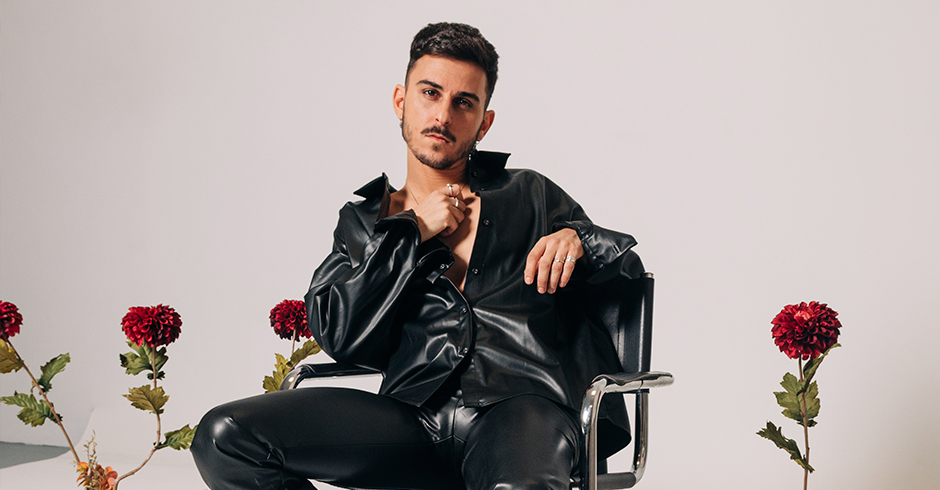

El joven cantante valenciano Álex Sienna creó Sienna como una terapia personal más que un proyecto musical. Desde su debut en 2017 con el álbum "Trágico y Fugaz" Sienna no ha parado de sacar música, de crecer y de explorar diferentes ritmos y estilos. Su música no es solo música, es una experiencia sensorial y emocional . Con 69.000 oyentes mensuales en Spotify, este artista se ha convertido en uno de los más seguidos en el pop alternativo español. Hoy conoceremos a la persona tras el artista.
Estudiaste Periodismo y Comunicación Audiovisual en Valencia, cuéntame, qué tal la experiencia?
Muy bien, lo que pasa es que yo estaba muy vinculado al mundo de la música. Estaba yo ya súper enfocado. Luego me hice un Máster aquí en Madrid, Porque yo estuve viviendo un año y medio en Madrid, Y de un máster de Mediaset. Luego también me he hecho muchos cursos de especialización y producción musical Porque toda la infraestructura la llevo yo, Yo soy autónomo también. Pero sobre todo hago diseño gráfico.
Si lo tenías tan claro con la música porque te metiste en una carrera de periodismo?
Un poco por las cosas sociales, por seguirlo estandarizado y lo normativo, Pero a mí de pequeño siempre me ha flipado escribir , O sea que yo he sentido de alguna forma Que yo me he metido en la música porque es una forma de comunicar, Pero desde pequeño siempre he tenido una vocación enorme por el periodismo, Pero más por la música evidentemente. Sobre todo por crear.
¿Cuándo empezó tu pasión por la música y tu recorrido musical ?
Desde pequeño. Es que ha sido de una forma muy natural, muy espontánea. Yo no le he dicho a mi familia en ningún momento quiero ser artista. Ha sido como algo súper natural, algo espontáneo. Yo desde los ocho años ya cantaba y estaba como súper obsesionado en crear como mi propia forma de entender la música, articularla, crear una identidad, porque me parece que es lo que cuesta más, tener como algo, una música reconocible, un discurso reconocible, una forma de hacer las cosas reconocibles. Siempre digo que no es el qué sino cómo lo hagas, cómo lo plantees. Desde pequeño siempre cogía mi guitarra y estaba componiendo.
Esa pasión por la música ¿De donde viene?
Mira, la verdad es que no hay mucha tradición en mi familia pero sí que hay mucho amor por la música. Supongo que viene de ahí, porque mi hermano también se dedica a la música. Él es un DJ y es increíble cómo pincha. Ha ido a sitios increíbles de Valencia, de Alemania, se va por todo el mundo a pinchar. Entonces, como que los dos estamos muy metidos en la música y sobre todo en crear algo genuino, que sea como muy nuestro, ¿sabes? Muy particular.
En todas las entrevistas que he estado mirando y lo que tú pones por redes y tal, utilizas la palabra genuino un montón. ¿Por qué el hincapié en usar esa palabra?
Porque yo creo que ahora mismo en un mundo en el que hay tantísima oferta, es decir, yo creo que ni siquiera los medios podéis absorber tanta música que sale cada día. Me parece que si algo genuino, ya no te hablo de que hagas algo que no ha hecho nadie, porque está todo prácticamente hecho, pero que lo hagas de una forma muy personal, es decir, ya sea en las letras, ya sea en la forma de producir tus canciones, ya sea en la forma de dirigirte a tu público, ya sea en la forma de moverte en un escenario, ya sea en la forma de tocar tus canciones en directo, en la forma de cantar, algo que sea solo tuyo. Siendo fiel, es decir, por ejemplo, yo sé que es verdad que ahora y el disco que viene va a ser súper distinto a lo que he hecho porque me mola mucho experimentar, pero con cierta coherencia respecto a lo que hago. Es decir, que se note la esencia, que sea yo, pero en esa evolución. Me parece súper importante que sea algo particular, algo personal, algo muy tuyo.
Sí, no dejarte llevar por las corrientes, que es lo que le pasa ahora mismo a muchos artistas que van un poco con la moda.
Claro, está bien impregnar un poco de las tendencias, impregnarse de nuevos caminos, de nuevas texturas, porque yo creo que hay que evolucionar y tampoco te puedes quedar en un mismo punto porque eso no te hace avanzar. A mí me gusta mejorar mucho como profesional, como músico, como persona y nunca estoy en el mismo punto. Yo estoy en constante cambio y en constante búsqueda, que no sé de qué, pero creo que cuando lo encuentre diré esto es. O a lo mejor no lo encuentro nunca y estoy toda mi vida buscando. .La idea es tener un camino, un recorrido e ir poniendo las piezas en el momento en el que las necesites.
¿Cuál fue tu primera experiencia como músico en un escenario?
Bueno, había un programa antes que era los Veo Veo, que además se acabaron hace muy poquito, que yo fui niño Veo Veo, creo que estuve como con 14 años y tuve mi primera experiencia ahí. Estuve en dos programas y me dieron una beca de estudio y demás. Ese fue mi primer impulso y mi primera actuación. Es verdad que lo hice con mucha inocencia, mucha ingenuidad, y eso me parece muy entrañable porque lo viví de manera muy inocente, no con tanta responsabilidad como vivo ahora las cosas. Es decir, al final lo vives como con los brazos abiertos, como un niño con un juguete. Pero salió increíble y a partir de ahí es como que siempre tenía ese gusanillo detrás de la oreja, de querer dedicarme a esto y como te decía, de crear mi propia forma de entender la música.
A partir de ahí, como que todo se fue haciendo un poquito más grande con estos discos y al final, como te decía, sientes mucha más responsabilidad, mucha más presión, porque al final no soy solo yo, tengo un equipo de personas. A mí nadie me ha regalado nada. Estuve a pico y pala, y ahora estoy muy contento porque he conseguido tener una comunidad que viene a las salas. Mi público ya no solo canta las canciones más conocidas, sino que se cantan absolutamente todas. Y eso me parece increíble. Hay como mucho humo en esta industria. Yo tengo mucho respeto por la gente que viene a las salas, la gente que escucha e intento siempre estar al 200 por ciento, cuidarme muchísimo para que la persona que venga a vernos, flipen.
Que bonita esa relación con tus fans y esa involucración con ellos, porque al fin y al cabo no sabes lo que han hecho para ir a verte.
Claro, hay gente que se le corre kilómetros para venir a verlos en el concierto y eso me parece tan increíble que se merecen para mí todo el respeto. Además, yo siempre que acabo un concierto, si puedo, me quedo a firmar todo el merchandising, a firmar discos, a hablar con ellos, porque me interesa mucho también cómo nos han conocido, qué piensan, cuáles han sido las experiencias que han tenido, las circunstancias que de repente escuchando una canción, pues se han vuelto. O sea, tengo unas historias! Gente que de repente ha conocido el amor de su vida en un concierto mío y ahora están juntos. Gente, incluso, que ha sido del armario en conciertos. Gente que de repente le cambia su vida y de repente vuelve a tener relación con ese amigo que hace mucho tiempo por escuchar una canción y una frase que le ha despertado el hecho clic a la cabeza. Eso me parece locos, es increíble.
En la intro de tu página web tienes puesto que Sienna para ti no solamente un proyecto musical si no una herramienta para procesar emociones. Para ti, a nivel anímico, ¿cómo ha sido este proyecto, cómo te ha ayudado?
Yo saqué mi primer disco en 2017, Trágico y fugaz, y eso empezó a funcionar con el boca a boca. De repente, hice de telonero de Vetusta Morla. Fui mucho a la Cadena SER, se me llenaban las salas, todo muy rápido. En ese momento no tuve mucha suerte con el manager que estaba y empecé yo por mi cuenta, solo contra el mundo.
Luego, saqué mi segundo disco Tiempos de impacto justo antes de la pandemia. Me da mucha pereza hablar de ella, pero sí que saco algo positivo de toda la pandemia. Lo que pasa es que me pilló en un momento en el que estaba llenando salas, que tenía ya trabajó hasta 2021, ya todo colocado. Y de repente, se paró todo. A partir de ahí saqué un EP muy pequeñito que se llama melancolic, del que estoy súper orgulloso, porque no concibo mi proyecto sin canciones como se me para el tiempo o como has podido.
¿Melancolic se cuece en la pandemia?
Claro, en esa catarsis, porque para mí fue muy duro. Es decir, pase una etapa destructiva brutal a nivel personal, fue como un bombardeo. Yo también soy muy exigente, me exijo mucho. También tengo mucha ambición, pero tengo los pies en el suelo. Me pongo las metas a corto y medio plazo. y sé dónde estoy, cómo hacer las cosas, y cuáles son los pasos a seguir. A veces todo eso se derrumba y te quedas un poco en tierra de nadie. Y pues ante toda esa inseguridad yo lo que hice fue transformarlo en un poquito de luz que fue Melancolic, que es la razón por la que estoy donde estoy hoy en día. A partir de ese EP ya fiché con la agencia con la que estoy, Todo volvió un poco, el resurgir de todo lo que había pasado.
Ahora mirándolo con perspectiva, crees que ese parón te ha ayudado a nivel personal y en tu desarrollo como músico?
Sí, totalmente. Nunca vamos a saber qué hubiera pasado si no hubiese estado la pandemia Pero yo creo que aceleró algo que yo ya iba a hacer. Ese cambio de texturas, a nivel de producción, a nivel de melodías. Melancólico lo compuse a piano cambiando mucho las melodías.
Precisamente eso te quería preguntar, ¿cómo es tu proceso creativo ?
He pasado por todo: de repente veo algo que me inspira y me viene la letra a la cabeza y luego le pongo música, a que salga todo a la vez, a componer con el piano. También a veces se me viene de una conversación, como me pasó con pico y pala, que es una de mis canciones más escuchadas. Estaba conversando con un amigo que me decía antes de que pasara todo esto, que tenía que tener un plan B por si todo esto no funcionaba, lo decía con cariño para protegerme. Esa conversación me dio mucha rabia. ¿Hasta qué punto la sociedad inculcan tener un trabajo normativo y lejos de lo que tú quieras hacer? Es verdad que es muy complicado, pero todo es complicado. Extrapole ese sentimiento y en esa canción empecé ya a hablar de los discursos morales, de los estereotipos, etc. Para mí fue algo tan eficaz como conectar tus pensamientos y conectar con otras cosas que son importantes.
Toda la formación que has tenido en Periodismo y comunicaciones audiovisuales, ¿cómo crees que te ayuda en tu carrera de músico?
Yo pienso que todo lo que hagas en la vida te sirve para algo, aunque sea una minucia, todo te ayuda. En la carrera conocí a gente increíble que han sido parte fundamental cuando empecé mi proyecto de Siena y que también me han ayudado muchísimo. Para mí la carrera ha sido un enriquecimiento a nivel personal. También es verdad que hay mucha precariedad en el periodismo, también en la música, en todo lo que es arte, letras, todo esto es jodidol.
Yo creo que un poco con la música, y con todo lo demás, hay mucha gente que hace de todo por amor a la fama y no amor al arte. ¿Cómo lo has experimentado tú en tu profesión?
Mira, yo cuando empecé con la música, hacía lo que me daba, la agarré con ganas y lo sigo haciendo. Yme ha salido bien. Creo que las cosas que se hacen vacías tienen un recorrido muy corto. Y a fruto, puedes hacer algo que de repente te ponga un impacto de la hostia, pero si eso no tiene un discurso detrás, una solidez y una ideología, no tiene una base sobre la que sustentarse y no va a ningún lado.
¿Cómo fueron tus primeros momentos en el escenario?¿Tienes ansiedad?
Mira, a mí me pasa una cosa. Yo tengo mucha ansiedad en mi vida en general y la estoy trabajando. Pero en el escenario es que se baja Alex y su se sube Sienna. Es que no soy yo. Es como la adrenalina, un poco todo. Es como un personaje, mi alter ego, que puede con absolutamente todo. Si estoy, por ejemplo, un tiempo que no he tocado y lo hago, es que bajo y digo es que sé por qué me dedico a esto, por estos momentos, porque es un poco donde cobra sentido todo. Para mí, la música, no es música sino se comparte.
¿Qué referentes o qué influencias tienes en tu música?
Por ejemplo, me gusta mucho Paolo Nutini, que es un artista italiano que me flipa. También, por ejemplo, a mí me influenció mucho una chica británica que se llama Julia Stone, que es brutal. Y como que esa austeridad que tenían las canciones, esa forma de comunicar tenía esos momentos de explosión y de epicidad y de desahogo, es algo que me he intentado llevar, sobre todo al directo, y a mis canciones. Tener como esos momentos de súper introspección, estar como metido y de repente que explote todo.
Antes has dicho que al principio tú por tus primeros discos te metían mucho en el saco del indie. ¿Cual es tu estilo de música actual?
A ver, yo diría pop. Es pop. Es pop total. Lo que pasa es que es una especie de simbiosis de contraste, porque a lo mejor te puedes encontrar un rap and bass, te puedes encontrar un pop más electrónico, que te puedes encontrar un pop más orgánico, ¿no? Pero como que todo tiene un mismo denominador común, que lo engloba un poquito todo, evidentemente, mi voz como que lo unifica todo un poco, pero también yo creo que esa coherencia a nivel letras, pero diría pop.
No, pero también está bien él no definirse, el fluir.
Totalmente. Yo estoy en contra de las etiquetas. Sé que es verdad que a veces es necesario, sobre todo en ciertas cosas de la vida y te tranquiliza. Pero en la música yo creo que está todo muy diluido ¿Por qué tienes que separar todo? Si te gusta, te gusta. Para mí ese es el indicador. Te pongo una canción, dime, ¿te gusta o no?
Tengo un conocido que decía que él solo escuchaba música si estudiaba y conocía al artista. ¿Qué opinas?
Eso es como decir, yo sólo me emociono con música italiana si entiendo italiano, no perdona. Es que las canciones traspasan a más que entender la letra. Al igual que una persona que no sepa español se puede sentir identificada porque no es lo que digas. Es si los acordes son menores o mayores, si hay séptimas, si hay tensiones, cómo cantes, si es una voz más oscura, más brillante, la cadencia de las cosas, cómo abras, cómo terminas las frases. Todo eso es una emoción y el ser humano es eso todo el rato. Una emoción pura y dura. Sí, puede ser que cuando te gusta un artista, quieres saber más de él, estudiarte el background y a lo mejor entenderás canciones y llevarlo más al terreno del artista. Pero creo que te puedes emocionar perfectamente de la misma forma con un artista que no conozcas. ¿Te emociona o no te emociona? Ya está, es que no hay más.
Has dicho que tú eres muy nervioso. Estar en una ciudad tan dinámica como Madrid, ¿no te agobia un poco? ¿cómo compaginas la vida personal con tu vida musical?
Es muy complicado. Yo llevo un mes aquí, he tenido dos mudanzas, he tenido conciertos de por medio, grabaciones, sesiones de fotos editoriales. Me han invitado conciertos también, un mogollón de cosas. Además, me entrego mucho a las cosas y a mí también me gusta mucho tener todo mi espacio: me caigo bien y me gusta estar en esa soledad elegida que necesito muchas veces para regenerarme.
¿Qué haces para desconectar?
Andar. Yo ando Ando sin dirección. Para ordenar un poco lo que está en mi cabeza. Me ayuda a desconectar, porque si estoy en mi habitación es como que empiezo a darle vueltas a las cosas. Al final estoy súper metido en la movida, en producción, en el arte, en la dirección, en todo los visuales que voy a hacer ahora, que también curro en Navidad.
Ya me has comentado que tu genero musical fluye mucho, pero, ¿hay algo que que quieras explorar en un futuro?
Es que ya lo estoy haciendo. Ahora he encontrado esos productores que necesitaba, sabes que son Álex Moreno, Pablo Fergus y estoy probando absolutamente de todo. De repente se ven como muchas texturas, muchas melodías distintas, muchos tipos de producción. Es como que lo estoy haciendo ahora y creo que lo que viene va a ser muy guay. El disco que saldrá con la gira, que saldrá la semana que viene, habla un poco de eso, de la liberación, de ese momento de enajenación que me da a mí en el escenario y lo quería bajar a tierra, extrapolarlo y materializarlo en el disco. Es como un trance.
¿Tienes ganas de empezar la gira y publicar tu próximo disco?
Mogollón, mogollón. Pero también tengo ganas de estar tranquilo. Es decir, saber que me voy de gira porque creo que la empiezo el 8 de marzo. Hay que trabajar todo el directo, porque llevo como dos años así como trabajando con el mismo directo porque son muchos cambios. Ahora toca montarlo todo alrededor de este concepto del Trance, entonces es un trabajazo y sería la hostia poder llevar escenografía y un concepto muy claro, visual. Lo que pasa es que me gusta estar encima de todo y no quiero delegar en alguien, por ejemplo, la creatividad de unos visuales que voy a defender yo. Entonces es algo que requiere de mi tiempo y de mi esfuerzo y sacrificio.